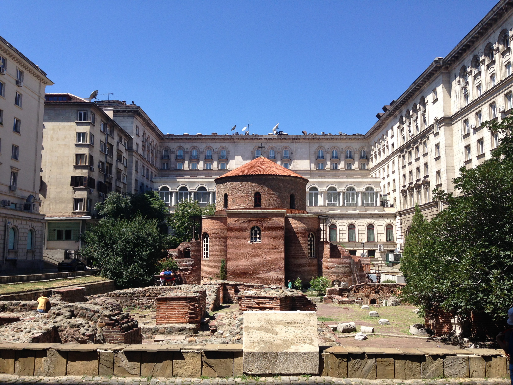
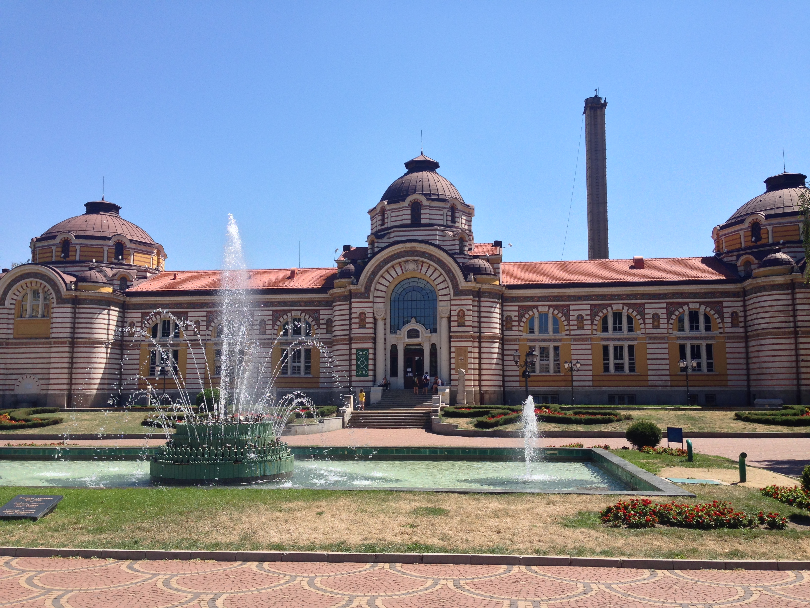
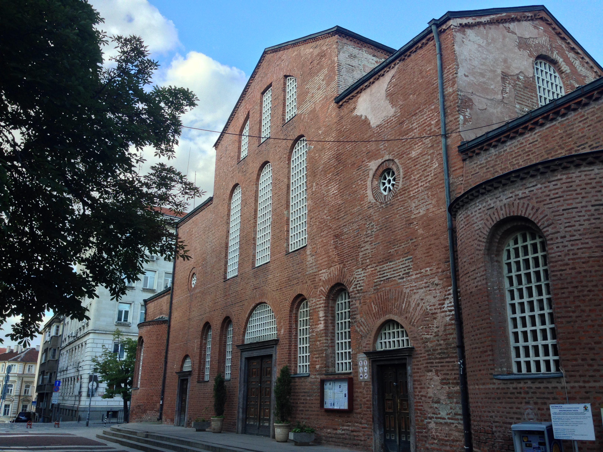
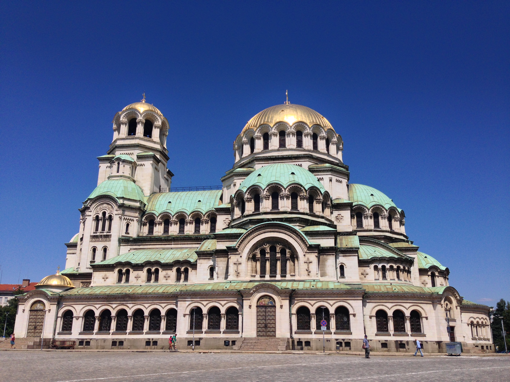
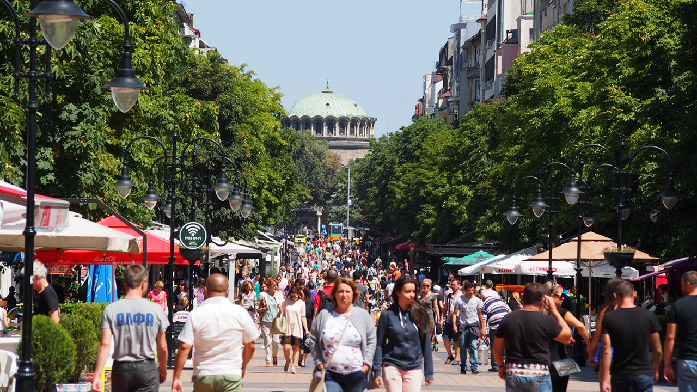

Places to (Pokemon) Go
Hello everyone! Svetlozar T. from the EuRuKo 2016 team here. In our previous blog post we covered some info on how to get to the venue and where to sleep. Hope this has been useful!
In this blog post, we will take a look at some info about Sofia and its sights.
Historical Sights
As you might already know, Sofia, or at least the area that the city spans, has been inhabited as early as 7000 BC. For centuries, this has been the city of Thracians, Byzantines, Slavs and Bulgars. It has been the residence of Roman emperors, an administrative centre under the First Bulgarian Kingdom, and a capital of an Ottoman province. You can see a monument of almost each historical era inside the city.

For example, if you take a walk around Serdika metro station, you can see the oldest building in Sofia - the Church of Saint George.
Built in the 4th century, it was a part of a larger complex. Watching the ancient ruins around it, one can imagine a small district built alongside the Roman road. Some of the buildings even had underfloor heating - look for the square tiles. The church itself is most famous for its murals, dating all the way back to 10th century.

If you are wondering how the heating worked, the answer is: hot springs. Sofia is famous for its many mineral hot springs. If you go just past the Sofia Central Bath, you will see people filling bottles of hot mineral water. The taps are free to use and the mineral water is fresh from the hot spring.

You can find another ancient building further to the east - the Saint Sofia Church. It dates back to the 6th century, and stands in the middle of what was once an ancient necropolis. You can even visit some of the unearthed tombs below the church. Also, St. Sofia gave the city its name in the 14th century.

Just next to St. Sofia church is the Alexander Nevsky Cathedral. Not long ago it boasted the title of the world's biggest Orthodox cathedral. It's currently running third, but even so, it's impressive. If you enjoy the quiet grandeur of large wall murals, or you want to see how the interior of a (rather large) Orthodox church looks like - pay it a visit. There is no entrance free, but make sure to visit before closing time (around 7:30pm).
Present Day
Sofia is the capital city of Bulgaria, and its population is about 1.26 million people. Apart from the traffic jams and crowds in public transport in peak hours, it rarely feels crowded.

That said, one might still feel a bit overwhelmed by the pedestrian traffic on Vitosha boulevard on weekends. Vitosha boulevard bridges the NDK and Serdika metro stations. It is one of the places that locals go to for brand shopping. It also has restaurants, bars, ice-cream shops, so it can be a nice walk on a bustling evening. There are even more restaurants scattered about the cross-streets. But, more about this in our dedicated blog post about food in Sofia.
Not far away from Vitosha boulevard is the City Garden, right next to the National Theater. This is one of the places to go if you feel like hanging out among Sofia's youth. It's another lively place where you can bring a beer and hang out on the benches or near the fountain. You could then walk to the Krystal garden, just a couple of streets away, to have a drink at the Krystal bar.
If street art is more up your alley, make your way to Tsar Shishman street and Rakovski street. Tsar Shishman is a good casual walk starting at the Sveti Sedmochislenitsi Church. The area around the church itself is another lively spot of Sofia. Most of the graffiti along Shishman street appear on the power substations, but you can also spot some on the odd wall. Rakovski street is a rather busy street bustling with traffic. It is also known as the Bulgarian Broadway, because of its many theaters. Again, you should be looking at the power substations for the bulk of graffiti art here.
Finally, to justify the title of this blog post, here is some valuable info about the Pokémon Go fans among you. As it turns out, one of the biggest Pokéstops in Sofia is just outside the National Palace of Culture. So, even if you feel the urge to go for some Pokémon hunting, you know where to look.
These are but a few places that we would recommend checking out. There is plenty to do and plenty to see in Sofia. Keep an eye out for a special blog post dedicated to gluttony and how to deal with it in Sofia.